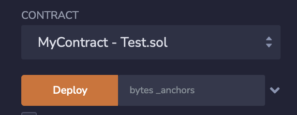
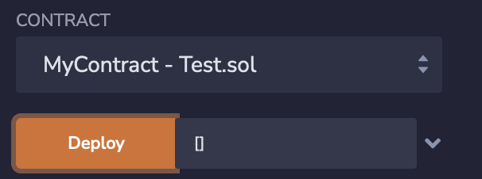
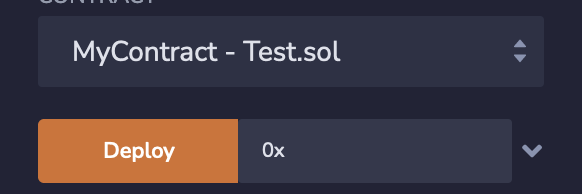

How to fix / debug errors (invalid arrayify value) when deploying a solidity contract in Remix
Problem
I am trying to deploy a smart contract via Remix. Unfortunately, it fails with a very unhelpful error message.
Error Message
creation of MyContract errored: Error encoding arguments: Error: invalid arrayify value (argument="value", value="", code=INVALID_ARGUMENT, version=bytes/5.5.0)
Code
Here is the constructor the contract uses:
struct RRSet { uint32 inception; uint32 expiration; bytes20 hash; } constructor(bytes memory _anchors) { // Insert the 'trust anchors' - the key hashes that start the chain // of trust for all other records. anchors = _anchors; rrsets[keccak256(hex"00")][DNSTYPE_DS] = RRSet({ inception: uint32(0), expiration: uint32(3767581600), // May 22 2089 - the latest date we can encode as of writing this hash: bytes20(keccak256(anchors)) }); emit RRSetUpdated(hex"00", anchors); }
Some thoughts
My contract uses is to inherit from an abstract contract as wells as from a
regular contract. Is there a way to see where to error or originates from or
is there a possiblity to debug it?
Answer
The constructor takes a byte array as an argument.
When you pass an empty value, it results in the error message mentioned in your question. It's because you're effectively passing "no value" - not "empty byte array".

creation of MyContract errored: Error encoding arguments: Error: invalid arrayify value (argument="value", value="", code=INVALID_ARGUMENT, version=bytes/5.5.0)
If you want to pass an empty byte array, you need to use the [] or 0x
expression (both options work):

